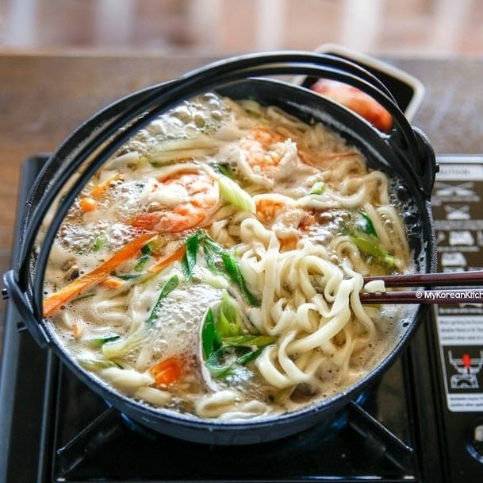

Kalguksu (Korean Knife Cut Noodle Soup)
Ingredients
- 4 1/2 cups Dried kelp and dried anchovy stock or water (*see note above)
- 1 tsp soy sauce , (I used regular kikkoman soy sauce)
- 1/2 tsp minced garlic
- 1/2 tsp fine sea salt (or more to taste)
- 300 g Kalguksu noodles or fresh ramen or udon noodles (10 ounces)
- Some water to boil the noodles
- 100 g zucchini (3.5 ounces), julienned
- 50 g carrot (1.7 ounces), julienned
- 40 g shiitake mushrooms (1.4 ounces), thinly sliced
- 130 g fresh / frozen littleneck clam (4.5 ounces), (weight includes the shells), cleaned / defrosted if frozen
- 100 g prawn (3.5 ounces), head and tail removed, deveined
- 10 g green onion (0.3 ounces), chopped
Directions
- Boil the anchovy and kelp stock in a pot on medium heat. Add the soy sauce, minced garlic and salt to season the stock. Once the stock is rolling boiling, add the zucchini, carrots and shiitake mushrooms and cook until lightly softened (about 2 mins). Then add the clams and prawns and boil until they’re cooked (about 2 mins). Make sure you don’t over cook them as they can get gummy.
- (Ideally at the same time as step 1) In a separate pot, boil the noodles in rolling boiling water until cooked (2 to 3 mins). Drain and rinse with cold running water. Set aside.
- Add the noodles into pot 1 (from step 1) and boil for one minute to make the noodles warm. Stir around. Add the green onion and turn the heat off. Serve while hot
Go Back!